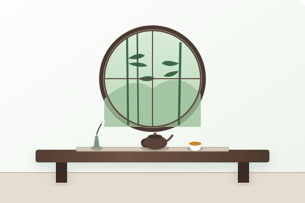

嚴選當季手採茶菁
堅持在最適當的晴朗時節，由資深採茶師人工手採「一心二葉」，只採摘葉片肥嫩、富含茶多酚與天然果膠的嫩菁，為好茶奠定豐厚底蘊。
山嵐茶韻深信，一杯好茶不僅是味蕾上的甘醇體驗，更是人與土地、時光與傳統工藝之間最深沉的對話。
山嵐茶韻的起點，始於南投鹿谷深山裡那片世代傳承的老茶園。在晨霧還未散去的清晨，老茶師順應天候手採新芽，以雙手溫度感知茶葉的萎凋節奏。
隨著時代更迭，我們發現許多現代人渴望在喧囂的生活節奏中尋找片刻寧靜。於是，我們守護傳統「中發酵、炭焙火」的經典台灣烏龍茶滋味，將深藏在鹿谷高山峻嶺間的溫潤茶韻，原汁原味地帶進現代日常茶席之中。
每一片茶葉從採摘到成茶，都承載著我們對品質與大自然的深厚敬意。
堅持在最適當的晴朗時節，由資深採茶師人工手採「一心二葉」，只採摘葉片肥嫩、富含茶多酚與天然果膠的嫩菁，為好茶奠定豐厚底蘊。
遵循傳統古法布球反覆包揉緊結，塑造勻稱圓潤的半球形體；再以龍眼木炭文火慢焙熟化，使香氣深層滲入茶葉內部，展現深邃甜潤的焙火韻味。
堅持無添加任何人工香精與甘味劑，全系列茶品均通過嚴格國家農藥檢測標準，讓茶湯純粹反映出鹿谷高山的真實風土與陽光雨露。

我們的品茗空間以簡約溫暖的天然木質茶席為基底，陳設質樸沈穩的紫砂茶壺與通透溫潤的白瓷品茗杯。圓形窗景迎入自然天光與戶外竹影，讓光影在琥珀色茶湯波光中緩慢流轉。
這裡沒有拘謹繁瑣的規矩，只有一盞好茶、一段屬於您的清靜悠閒。無論是初次接觸烏龍茶的新朋友，或是喜愛細細鑑賞茶韻的老茶饕，都歡迎在此放慢呼吸，感受茶香帶來的寧靜力量。